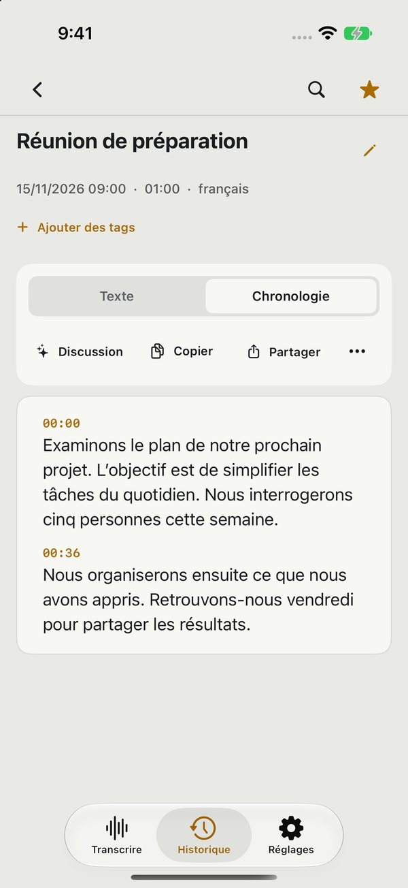
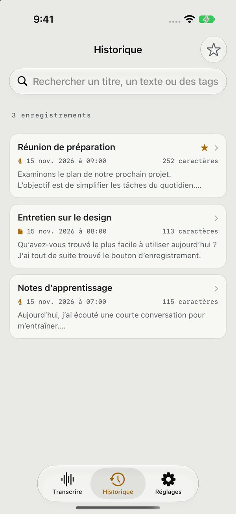
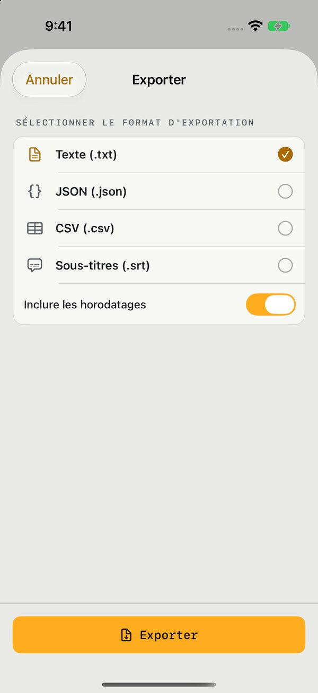

Votre voix,transformée en texte.
Enregistrez une réunion, un cours ou un entretien — ou importez un fichier audio ou vidéo — et obtenez une transcription sur votre iPhone ou votre iPad. La reconnaissance vocale s’exécute sur votre appareil avec Whisper : après un téléchargement de modèle unique, elle peut fonctionner sans connexion Internet.
- Toutes les fonctionnalités gratuites
- Sans publicité
- Sans achats intégrés
- Sans compte
- iPhone & iPad
Toutes les fonctionnalités, gratuites.
Il n’y a pas d’offre payante. Tout ce qui est présenté sur cette page — enregistrement, import de fichiers, tous les modèles Whisper, exports, historique, tags, conversation Apple Intelligence et Raccourcis — est disponible gratuitement. Vous n’avez pas besoin de créer un compte et l’app n’affiche pas de publicité.
- Ni abonnement, ni achat unique
- Aucun achat intégré, aucune fonctionnalité verrouillée
- Aucune publicité et aucun suivi par des tiers
- Ni inscription ni connexion
- Aucune limite fixée par l’app sur la durée d’enregistrement ou le nombre de fichiers — le stockage, la mémoire et la batterie de l’appareil restent des limites
Trois étapes pour obtenir une transcription
Téléchargez un modèle une fois
Au premier lancement, choisissez un modèle Whisper et téléchargez-le. Le modèle Base par défaut pèse environ 142 MB. C’est la seule étape qui nécessite une connexion Internet.
Enregistrez ou importez
Touchez pour enregistrer avec le microphone, ou sélectionnez un fichier audio ou vidéo dans Fichiers ou Photos. Vous pouvez mettre l’enregistrement en pause et le reprendre.
Lisez, modifiez et exportez
Relisez le texte avec ses horodatages, corrigez les erreurs, puis partagez-le au format TXT, CSV, JSON ou en sous-titres SRT.
Ce que vous pouvez faire avec l’app
Un aperçu détaillé des principales parties de l’app.
Enregistrez ou importez vos propres fichiers
Lancez un enregistrement d’un simple toucher, ou importez un fichier que vous avez déjà. L’app convertit l’audio et le transcrit sur l’appareil.
- Enregistrement au microphone avec pause et reprise, et sélecteur de microphone pour les micros externes
- Statut d’enregistrement sur l’écran verrouillé et dans la Dynamic Island grâce à une Live Activity (sur les iPhone compatibles)
- Importez de l’audio et de la vidéo aux formats M4A, WAV, MP3, MP4 et MOV depuis l’app Fichiers
- Choisissez une vidéo directement dans votre photothèque
- Option « Garder l’écran allumé » pour les longues sessions
Whisper, exécuté sur votre appareil
L’app utilise les modèles Whisper ouverts d’OpenAI via whisper.cpp, avec l’accélération GPU Metal lorsque l’appareil la prend en charge. En choisissant un autre modèle, vous pouvez privilégier la vitesse ou la précision.
- 10 modèles Whisper, de Tiny (environ 15 MB) à Large v3 Turbo et Medium (jusqu’à environ 1,5 GB)
- Détection automatique de la langue ou choix parmi 18 langues
- Traduction facultative du résultat en anglais
- Téléchargement facultatif d’un encodeur Core ML qui peut accélérer le traitement sur les appareils compatibles
- Sous iOS 26 ou version ultérieure, le moteur vocal d’Apple sur l’appareil est aussi disponible comme alternative

Vue chronologie ou vue de lecture
Passez d’une vue texte épurée à une chronologie avec horodatages. Réécoutez l’audio d’origine pour vérifier ce qui a été dit et corrigez le texte si nécessaire.
- Vues texte et chronologie, avec horodatages en option
- Lecture audio avec vitesse et position ajustables
- Modification de la transcription et de son titre
- Copie d’un paragraphe ou de tout le texte
- Recherche dans une transcription

Un historique dans lequel chercher
Chaque transcription est enregistrée sur votre appareil pour que vous puissiez y revenir plus tard.
- Recherche par titre, texte ou tag
- Favoris et tri
- Tags que vous pouvez ajouter, renommer, fusionner et supprimer sur toutes les transcriptions
- Filtrage de l’historique par tag

Texte, données ou sous-titres
Partagez une transcription dans le format adapté à l’étape suivante : notes, feuille de calcul, script ou logiciel de montage vidéo.
- TXT pour les notes et les documents
- CSV pour les feuilles de calcul
- JSON avec segments pour vos propres outils
- Sous-titres SRT pour le montage vidéo
- Partage de l’enregistrement d’origine en fichier audio
Discutez avec une transcription iOS 26+
Sur les appareils compatibles avec Apple Intelligence, vous pouvez discuter avec une transcription — demander un résumé, les décisions clés ou les actions à mener — et générer un titre. Les conversations sont enregistrées pour chaque transcription. Les transcriptions longues sont lues par sections. Un mode facultatif Private Cloud Compute (iOS 27 ou version ultérieure) est désactivé par défaut.
Raccourcis et Siri
Utilisez les raccourcis d’app pour lancer ou arrêter un enregistrement, transcrire un fichier multimédia, retrouver des transcriptions, obtenir le texte d’une transcription, ou ajouter des tags et des favoris — pratique pour les automatisations. Certaines actions nécessitent une version plus récente d’iOS.
Toutes les fonctionnalités — toutes gratuites
La liste complète de ce que l’app propose actuellement. Rien ici ne nécessite d’achat.
Capture
- Enregistrement au microphoneGRATUIT
- Mettre l’enregistrement en pause et le reprendreL’enregistrement gère aussi les interruptions, comme les appelsGRATUIT
- Changer de microphoneGRATUIT
- Live Activity pendant l’enregistrementÉcran verrouillé et Dynamic IslandGRATUIT
- Importer des fichiers audioM4A, WAV, MP3 et autres formats courantsGRATUIT
- Importer des fichiers vidéoMP4, MOV et autres formats courantsGRATUIT
- Importer une vidéo depuis PhotosGRATUIT
- Transcription en directLe texte apparaît pendant que vous parlez · iOS 26+GRATUIT
Reconnaissance vocale
- Whisper sur l’appareil (whisper.cpp)GRATUIT
- Les 10 modèles WhisperTiny, Base, Small, Medium, Large v3 Turbo et variantes compactesGRATUIT
- Moteur vocal d’Apple sur l’appareiliOS 26+, langues gérées par iOSGRATUIT
- Détection automatique ou choix parmi 18 languesGRATUIT
- Traduire en anglaisGRATUIT
- Accélération GPU MetalLorsque l’appareil la prend en chargeGRATUIT
- Encodeur Core ML (téléchargement facultatif)GRATUIT
Outils de précision et de performance
- Ignorer les passages silencieuxDétection d’activité vocale (VAD)GRATUIT
- Nettoyer l’audioRéduction du bruit et normalisation du volumeGRATUIT
- Indices de vocabulaireNoms et termes auxquels le modèle doit s’attendreGRATUIT
- Flash AttentionPeut réduire l’usage de la mémoire et accélérer le traitementGRATUIT
- Inclure les horodatagesGRATUIT
Lecture et modification
- Vue texte et vue chronologieGRATUIT
- Lecture audio avec réglage de la vitesseGRATUIT
- Modifier le texte et le titre de la transcriptionGRATUIT
- Copier un paragraphe ou tout le texteGRATUIT
- Rechercher dans une transcriptionGRATUIT
Historique et organisation
- Historique des transcriptions enregistréGRATUIT
- Recherche par titre, texte ou tagGRATUIT
- Favoris et triGRATUIT
- Tags : ajouter, renommer, fusionner, supprimerGRATUIT
- Filtrer par tagGRATUIT
Export et partage
- Texte (.txt)GRATUIT
- CSV (.csv)GRATUIT
- JSON (.json)GRATUIT
- Sous-titres (.srt)GRATUIT
- Partager l’audio d’origineGRATUIT
- Partager le texte via la feuille de partageGRATUIT
Apple Intelligence
- Discuter à propos d’une transcriptioniOS 26+ sur les appareils compatiblesGRATUIT
- Historique des conversations enregistré pour chaque transcriptionGRATUIT
- Générer un titreGRATUIT
- Mode Private Cloud ComputeFacultatif · iOS 27+ · désactivé par défautGRATUIT
Automatisation et app
- Actions Raccourcis et SiriGRATUIT
- Interface pour iPhone et iPadGRATUIT
- Apparence claire, sombre ou systèmeGRATUIT
- Interface en 11 languesGRATUIT
- Gestion des modèles et du stockageGRATUIT
Les fonctionnalités associées à une version d’iOS nécessitent cette version ou une version ultérieure. Les fonctionnalités Apple Intelligence dépendent aussi de la compatibilité de l’appareil, de la région et des réglages de langue.
Choisissez l’équilibre qui vous convient
Les petits modèles ont tendance à être plus rapides et plus légers ; les plus grands ont tendance à être plus précis, mais demandent plus de stockage, de mémoire et de temps. Vous pouvez changer de modèle à tout moment dans Réglages.
| Modèle | Taille du téléchargement (env.) | Généralement adapté à |
|---|---|---|
| Tiny Q5_1 | 15 MB | Brouillons rapides sur les appareils anciens ou à l’espace limité |
| Tiny | 39 MB | Transcription rapide et basique |
| Base Q5_1 | 60 MB | Une version allégée du modèle par défaut |
| Base par défaut | 142 MB | Usage quotidien, avec un bon équilibre entre vitesse et précision |
| Small Q5_1 | 163 MB | Meilleure précision avec un téléchargement plus léger |
| Small | 466 MB | Précision supérieure |
| Medium Q5_0 | 568 MB | Haute précision avec un téléchargement plus léger que Medium |
| Large v3 Turbo Q5_0 | 574 MB | Rapide et précis, dans une variante allégée |
| Large v3 Turbo Q8_0 | 874 MB | Rapide et précis |
| Medium | 1.5 GB | La plus haute précision parmi les options proposées, mais plus lent |
Les fichiers de modèles sont téléchargés depuis Hugging Face. La vitesse et la précision réelles varient selon l’appareil, la langue, la qualité de l’audio et sa durée.
Conçue pour garder votre audio sur votre appareil
La transcription Whisper s’exécute localement. L’app n’intègre ni publicité, ni SDK d’analyse, ni suivi par des tiers, et elle n’envoie pas votre audio ni vos transcriptions au développeur.
Reste sur votre appareil
Les enregistrements, les médias importés, les transcriptions, les tags, les conversations et les réglages sont stockés dans l’app, sur votre appareil. Vous pouvez les supprimer dans l’app à tout moment.
Quand l’app se connecte
Pour télécharger les fichiers de modèles Whisper, VAD et Core ML depuis Hugging Face ; pour vérifier dans l’App Store si une version plus récente est disponible ; et lorsque iOS télécharge les modèles vocaux du moteur d’Apple.
Votre choix
Private Cloud Compute pour Apple Intelligence est désactivé par défaut. Si vous l’activez, le texte de la transcription et votre question sont traités par Private Cloud Compute d’Apple. Le partage d’un export l’envoie vers la destination que vous choisissez.
Avant de commencer
Appareil et système
Un iPhone ou un iPad sous iOS / iPadOS 17.0 ou version ultérieure. Transcription en direct, le moteur vocal d’Apple et Apple Intelligence sur l’appareil nécessitent iOS 26 ou version ultérieure ; Private Cloud Compute nécessite iOS 27 ou version ultérieure.
Stockage et réseau
Une connexion Internet et de l’espace de stockage libre sont nécessaires pour télécharger un modèle (d’environ 15 MB à 1,5 GB selon le modèle). L’autorisation d’accès au microphone est nécessaire pour enregistrer.
Questions fréquentes
L’app est-elle vraiment gratuite ?
Oui. Toutes les fonctionnalités sont actuellement gratuites. Il n’y a ni publicité, ni achats intégrés, ni abonnement, et aucune création de compte n’est demandée.
Fonctionne-t-elle hors ligne ?
La transcription Whisper est conçue pour s’exécuter sur votre appareil. Une connexion Internet est nécessaire une fois pour télécharger un modèle ; ensuite, l’enregistrement et la transcription avec ce modèle peuvent généralement se faire sans connexion. Le téléchargement d’autres modèles, la vérification des mises à jour et le mode facultatif Private Cloud Compute nécessitent une connexion.
Mon audio est-il envoyé à un serveur ?
La transcription Whisper s’exécute localement et l’app n’envoie ni audio ni transcriptions au développeur. La seule exception que vous contrôlez est le mode facultatif Private Cloud Compute pour la conversation Apple Intelligence, qui envoie le texte de la transcription et votre question à Private Cloud Compute d’Apple. Il est désactivé par défaut.
Quel modèle choisir ?
Base est un bon point de départ pour la plupart des usages. Si les résultats manquent trop de mots, essayez Small, Medium ou Large v3 Turbo. Si la transcription vous semble lente ou si l’appareil manque de mémoire, une variante Tiny ou Q5 peut aider.
Quels fichiers puis-je importer et exporter ?
Vous pouvez importer des formats audio et vidéo courants comme M4A, WAV, MP3, MP4 et MOV depuis Fichiers, ainsi que des vidéos depuis Photos. Les transcriptions peuvent être exportées en TXT, CSV, JSON ou SRT, et les enregistrements partagés en fichiers audio.
Quelles langues sont prises en charge ?
Pour la transcription, vous pouvez utiliser la détection automatique ou choisir l’anglais, le japonais, le chinois, le coréen, l’espagnol, le français, l’allemand, l’italien, le portugais, le russe, l’arabe, l’hindi, le néerlandais, le polonais, le turc, le vietnamien, le thaï ou l’indonésien. Les résultats peuvent varier selon la langue. L’interface de l’app est disponible en 11 langues.
Peut-elle créer des sous-titres pour une vidéo ?
Oui. Importez une vidéo, transcrivez-la, puis exportez-la en SRT. La plupart des logiciels de montage vidéo peuvent importer des fichiers SRT. La synchronisation des sous-titres suit les segments reconnus ; vous voudrez peut-être l’ajuster dans votre logiciel de montage.
Quelle est la durée maximale d’un enregistrement ?
L’app ne fixe pas de limite précise. En pratique, un audio très long dépend de l’espace de stockage libre, de la mémoire et de la batterie de votre appareil, et les modèles plus grands prennent plus de temps. Si un fichier long échoue, un modèle plus petit ou Flash Attention peut aider.
S’agit-il d’une app officielle d’OpenAI ?
Non. Il s’agit d’une app indépendante qui exécute les modèles Whisper publiés ouvertement par OpenAI via le projet open source whisper.cpp. Elle n’est ni affiliée à OpenAI, ni approuvée par OpenAI.
Essayez votre prochain enregistrement
Téléchargez l’app, récupérez un modèle une fois, et voyez comment elle se débrouille avec vos réunions, vos cours et vos vidéos.
Télécharger dans l’App Store